חשבון דיפרנציאלי ואינטגרלי
חשבון דיפרנציאלי
במתמטיקה אנו מוצאים שני תחומי מחקר עיקריים: הראשון הוא תחום המתמטיקה השימושית, והשני הוא תחום המתמטיקה התיאורטית. המתמטיקאים התיאורטיים הם אלה המקדימים את זמנם תמיד. הם יוצרים חשיבה ותפיסה מתמטית שאינה מוגבלת לעולם המוכר לנו, ומפתחים רעיונות ודרכי התמודדות עם תחומים שאולי רק בעוד מאות שנים (אם בכלל) יהיה להם שימוש. דוגמה נפלאה לפיתוח כזה היא שיטות הפתרון שהגה לגרנז' (1736 - 1813), למשוואות סבוכות במתמטיקה, שלא היה להם שימוש מעשי עד לעידן המחשב בשל מספר הפעולות הנדרש כדי להגיע לפתרון. רק מאז הפיתוח של המחשבים (כ- 250 שנה לאחר מכן) היה ניתן להשתמש ברעיונות אלו.
תחום המתמטיקה השימושית עוסק יותר בפיתוחים לבעיות עכשוויות. כך הגיע ניוטון לפתח את החשבון הדיפרנציאלי והאינטגרלי. ניוטון היה זקוק לכלי מתמטי שיתאר תנועות שאינן במהירות קבועה. באופן מעשי אין מכונית הנוסעת במהירות קבועה. היא חייבת להאיץ ולהאט. כדי להתמודד עם משוואות אלה היה עליו לפתח שיטות חקירה מתמטיות נאותות לעקומות מסוגים שונים.
על אותם רעיונות עבד באותה תקופה מתמטיקאי ופילוסוף אחר – לייבניץ.
לאחר מריבה קשה שפרצה בין השניים על זכות הראשונים, אנו מייחסים כיום לשניהם זכות זו בפיתוח חקירת הפונקציה על אף שרוב הסימונים המתמטיים המקובלים לשימוש היום, הם אלה שטבע לייבניץ. באותם ימים התעורר ויכוח מר ונוקב על ידי כמה פילוסופים שטענו כי הפיתוחים "החדשניים" האלה סותרים כל רעיון לוגי, מאחר שהם עוסקים במה שהם כינו "רוחות הרפאים של שברי מספרים". אולם בהמשך היו פילוסופים ומתמטיקאים אחרים שהצליחו לתת תוקף לוגי לתורה זו. ביחד עם העובדה שרעיונות אלה אכן "עבדו" והצליחו להשיג את מבוקשם, אומצו השיטות הנ"ל של חקירות הפונקציה וקיבלו מעמד רשמי במתמטיקה.
בספר לימוד זה לא אֶכָּנֵס להוכחות הפורמליות של תורת הגבולות הנדרשות כדי להבטיח את התוקף הלוגי של החקירה. במקום זאת אציג את הדברים באופן שיהיה משכנע מספיק, גם אם לא פורמלי.
מה דרוש לנו כדי לחקור פונקציה, או מה אנו מעוניינים לדעת כאשר אנו מקבלים פונקציה ?
נניח (רק לשם המחשה) שאנו חוקרים פונקציית טיסה של מטוס לפי "הקופסה השחורה" הממוקמת בו, (כמובן, תחום זה כולל מקרים רבים ושונים אחרים) ונניח שרוּם הטיסה המתוכנן היה 3 ק"מ מעל פני הקרקע.
נרצה לדעת מספר דברים על מהלך הטיסה. ראשית כמה פעמים חצה המטוס את הרום הזה. אם נראה תנודות רבות מדי, נוכל להסיק שהטיסה לא הייתה יציבה; אולי בשל כשלים במטוס או בשל תנאי הבריאות של הטייס. אולי אפילו נלמד על יציבות הטייס (ייתכן שהיה טירון). יעניין אותנו מאוד מה היו הגבהים המקסימליים והמינימליים של הטיסה. נוכל ללמוד מכך על צריכת הדלק של המטוס ועל תנאי צפיפות האוויר שבהם הוא טס. כמו כן נשים לב לקצב הנסיקות והצלילות. יש שהן מסוכנות מאוד בשל תלילותן. זה יכול ללמד אותנו אם היו תקלות פתע שבהן נאלץ הטיס לנסוק בחדוּת, או שהן היו מתוכננות.
באופן כללי אנו רואים שאם יהיה בידינו כלי משמעותי לחקירת פונקציה זו, נוכל ללמוד הרבה על תנאי הטיסה ולהבין את מהלכי המטוס והטייס. לימוד זה יעזור לנו גם במקרים של תאונות מטוסים שבהם איננו יכולים כבר לשוחח עם הטייס, גם במקרים שבהם אנו מכשירים טייס ומתדרכים אותו, וגם כאשר אנו מכניסים לשימוש מטוס חדש.
כבר למדנו כיצד למצוא נקודות 0 על פונקציה. כדי למצוא את השינויים האחרים שהעלינו, עלינו ללמוד נושא חדש נוסף והוא מציאת השיפועים של הפונקציה. שיפוע הוא בדיוק אותו קצב שינוי שאנו מחפשים. מה מידת השיפוע של המטוס כאשר נסק או צלל.
זה הנושא הראשון שנלמד לאחר תזכורת בפונקציית קו ישר.
נקודות על מערכת צירים:
לכל נקודה יש שני שיעורים 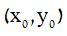.
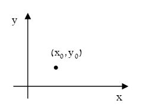שימו לב: אנו מפרידים בין 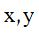 ללא אינדקס המתארים משתנים, לבין 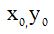 עם ציון אינדקס המייצגים נקודות.
למדנו על פונקציות בכלל שלכל x יש ערך y אחד ואחד בלבד.
כמו כן למדנו את הסימונים:
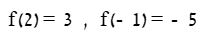 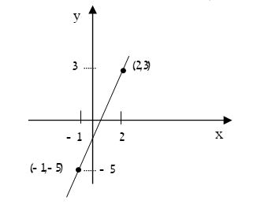גם ניתחנו בעבר את פונקציית הקו הישר y=mx+n כאשר m הוא פרמטר המייצג את השיפוע, ו- n היא נקודת חיתוך הישר עם ציר ה- (כאשר x=0).
את השיפוע הגדרנו על ידי: 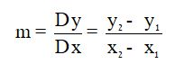
לדוגמה בציור ששרטטנו: 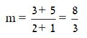
גם למדנו איך למצוא את משוואת הישר על ידי שיפוע ונקודה לפי הנוסחה: 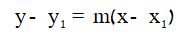
ובמקרה שלנו נבחר את השיפוע 8⁄3 ואת הנקודה (2,3) :
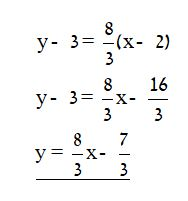
-
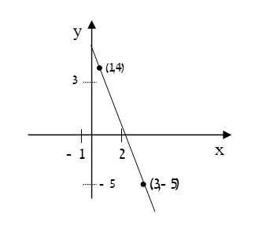
א. חשבו את שיפוע הישר המשורטט.
m=-4.5
ב. רשמו את משוואת הישר הנתון.
y=-4.5x+8.5
ג. קבעו היכן נמצאת הנקודה (2,1) – על הישר , מעל הישר או מתחת לישר.
מתחת לישר
-
רשמו את משוואת הישר העובר בנקודות: f(2)=1 f(0)=-5
y=3x-5